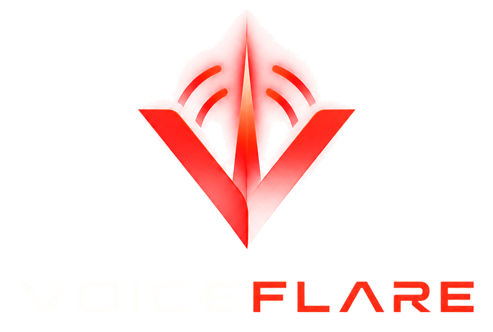
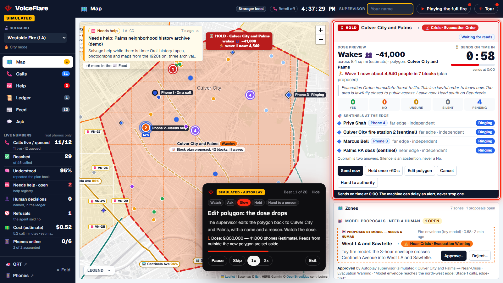
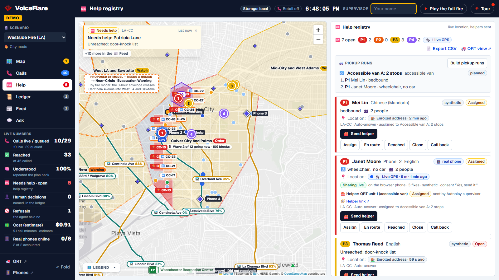
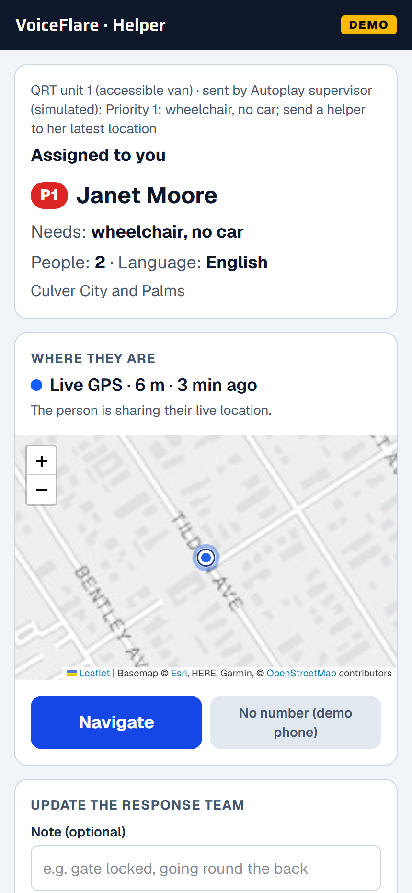
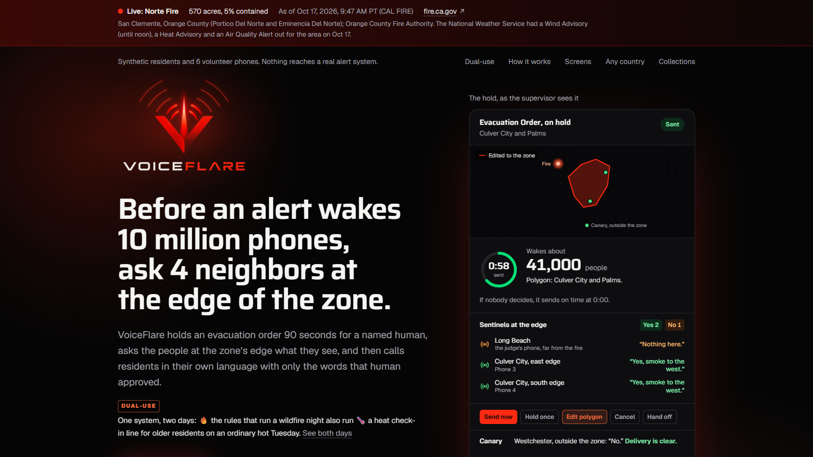

Before an alert wakes 10 million phones, ask 4 neighbors at the edge of the zone.
A supervisor’s board for the gentlest alert that still works.
- USC Viterbi × InnovateLA Dual-Use Hackathon
- Resilience Comms
- Retell AI
The problem · Los Angeles, January 2025
Too late, or to everyone.
Today’s alerts answer with a bang: one message, one way.
West of Lake Avenue, orders came about 8 hours after the east side. 18 of the 19 who died lived there.
Some residents nearest the ignition got their first alert after homes had begun burning.
phones got an evacuation warning meant for one fire area.
Burning this weekend: Norte Fire, San Clemente. Orders for five zones came 81 minutes after the 911 call, with no Warning first.
CAL FIRE, Oct 17, 9:47 AM: 570 acres, 5% contained“Residents are your earliest sensor and your biggest flood.”Resilience Comms brief
Why today’s tools fail
Loud, late, one-way.
Wake a whole county. Cannot hear a reply.
Read a script, then hang up.
You find your own zone, at 3 AM.
Everyone calls at once. The line jams.
The insight
Don’t shout
at a zone.
Ask its edge.
Ask 4 people at the edge first. Wake the zone only when a named human decides.
The gentlest alert that still works.
Three jobs on one supervisor’s board.
Ask the edge
- Sentinels at the zone’s edge: does this match what you see?
- A 90 s hold shows the dose: how many phones it wakes.
- A canary confirms delivery.
Call everyone, in their language
- Edge-first waves, 5 calls at a time.
- Only the words a named human approved, read verbatim.
- Teach-back checks they understood.
Hand to a person
- A help registry, priorities 1 to 4.
- Live location, only with consent.
- A helper sent to the exact spot.
Retell AI on the phone network · a browser phone as fallback · 8 languages
How it works
The ladder, on one board.
- 1
Watch
Models and feeds only propose. A dashed zone waits for a human.
- 2
Ask
Sentinels at the edge: does this match what you see?
- 3
Slow
The dose shows first. Calls go edge-first, 5 at a time.
- 4
Hold
An Order waits 90 s. Then it sends on time.
- 5
Hand to a person
Every exit is a named human: registry, helpers, ledger.
The overnight supervisor of the call line.
An Evacuation Order about to wake a zone.
- Choosing a zone’s state
- Declaring anyone safe
- Giving an ETA
End-to-end demo · a simulated fire
Westside Fire, in 3.5 minutes.
- 0:151
Approve the Warning
Culver City. A name, a reason, the exact words.
- 0:302
Edge-first calls
Phone 1 answers in Spanish. Teach-back passes.
- 0:553
“Wheelchair, no car”
A registry row at the corner she named: Venice and Sepulveda.
- 1:354
The hold
9.8 million→ 41,000A sentinel says “nothing here.” The polygon is fixed.
- 2:055
Send, then the canary
Quorum, Send now. A phone outside the zone says “No”: canary clear.
- 2:356
Pickup run
“We can’t leave” jumps to priority 1. Accessible van A: 2 stops.
- 2:557
Tower down
Ten pins go silent: possible tower loss. Send a door-knock team.
- 3:108
The ledger
Every decision, with a name and a reason. Every refusal, too.
/board?autoplay=1
Runs the whole beat sheet hands-free. Every send is simulated.

Live: /board?autoplay=1
Live: open /board?autoplay=1
Westside Fire scenario. Synthetic residents, 6 volunteer phones, every send simulated. Live: /board?autoplay=1
New · live location, with consent
From “I can’t leave” to a helper at the door.
- 1
Ask on the call
May we share your location with the response team?
The answer is stored with the call. - 2
One tap
A text link streams the phone’s GPS to the database.
- 3
The exact spot
The response team sees the live pin, not the zone’s center.
- 4
Send a helper
Turn-by-turn directions to the door.
- 5
Then it stops
When help arrives, or after 4 hours. Never in public feeds.

The live pin and the helper’s route, on the response team’s map.

The helper’s phone:
directions to the door.
What is new
It asks before it alerts.
Useful · the second customer
The same board, on an ordinary Tuesday.
- Campus mode
USC DPS
Buildings are zones. RAs and officers on post are sentinels. A 20-second test call each month.
- Base mode
Military installations
Housing, gates and the flight line are zones. Gate posts are sentinels. Personnel accountability.
- Collections line
Galleries and archives
A grab list of what cannot be replaced, and help at Warning. Lives first, always.
- Any country
Six jurisdictions
Los Angeles, Chongqing, Ōfunato, Rhodes, Odisha, East Gippsland. Same rules, six adapters.
gold-set calls classified correctly (96%), in 5 languages
“needs help now” calls caught: 100% recall
per call minute, estimated (Retell, all-in)
Funding pathNSF SBIR Phase I (up to $305,000) pays to prove it in drills with USC DPS. /evidence measures the milestones live.
Adapt · back full circle
Fire is the loudest emergency.
Drowning is the quietest.
- Watch
A swimmer is still under water.
- Ask
A poolside speaker and every phone in the house.
- Hand to a person
The neighbor, then the emergency number, with the address and gate code.
Only a person can stand it down.
The same ladder, from hours down to seconds. A named person is still the last rung.

Under the hood
- Retell AIvoice on the phone network
- Claude Haikuin-call turns, seven tools
- Claude Sonnetpost-call classification
- Next.jsthe board and the phones
- SupabasePostgres; a local store in the demo
- ArcGISGeoJSON feeds
- CAL FIRE, NWSlive incident and alert feeds
- Leafletthe map
Responsible use
Misuse: a wrong or compromised zone directive would be relayed to everyone in it, a colluding sentinel panel could delay a real warning, and the registry is a list of real people at real locations.
Limits: the agent reads only the directive a named human approved for the zone the phone is in and can change nothing else; the hold is capped and never blocks a send; every refusal and every human decision is in a ledger; the registry stores phone, zone, needs and last location, is visible only to the response team, and is purged 72 hours after the incident closes.

Start at / · tour /board?tour=1 · run /board?autoplay=1
Ask the edge first.
Let a named human decide.
- Team VoiceFlare
- Resilience Comms
- USC Viterbi × InnovateLA
- Retell AI